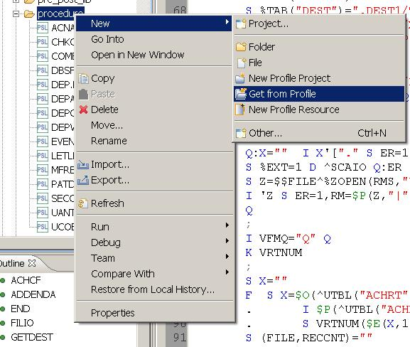
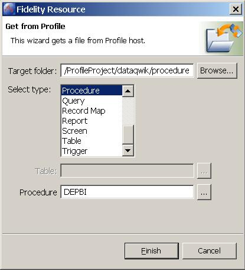

Get From Profile
Profile resources can be retrieved from a Profile RTE with the Get from Profile
function. This function can be accessed from the right-click menu on the
Resource Navigator in the Fidelity Profile Perspective.

Note: Profile M routines currently cannot be retrieved from a Profile RTE
via Application Studio.
Get from Profile Wizard

Fields
-
Data-QWIK Object Type -
By clicking on one of the choices in this box, the remainder of the fields
in the tab are repainted accordingly.
-
Table - This field is
required for columns and triggers. To retrieve a column or a trigger, the table
name must be specified first and then the column or trigger.
-
Data-QWIK Object Name -
The description of this field changes based on the selected Data-QWIK
Object type. Enter the name of the Data-QWIK object to be retrieved. NOTE:
A look-up table is not available for Data resources. You must enter the
global name and keys delimited by a dash. For example
^STBL("MSG") should be entered as STBL-MSG.
-
Target Directory - This
field is the directory path where retrieved object is saved. This should
be the same as the StarTeam working folder path.
-
Local Target File - This
field is computed based on the Object Name, Target Directory, and the
Object Type. The value is populated after a successful Get. It cannot be
manually edited.
-
Get Columns - This check
box indicates whether to retrieve all of the columns associated with a
table or just retrieve the table definition.
-
Open file for editing when done
- This check box indicates whether the file should be opened in the
editor after a successful Get.
Buttons and Actions
-
The Table Look-up - opens
a new window with tables beginning with the characters entered in the
Table field. For example if DEP is entered in the Table field, all tables
beginning with DEP will appear in the look-up window.
-
The Object Look-up -
opens a new window with Data-QWIK objects beginning with the characters in
the Data-QWIK Object Name field. For example if Procedure is selected and
A is entered in the Procedure field, all procedures beginning with A will
appear in the look-up window.